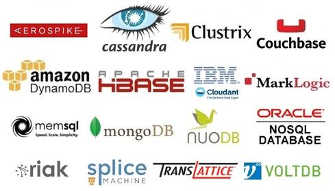

Databases
Some things you should know about databases.
Agenda
- Synfony2 MySQL demo
- Distributed databases CAP theorem
- RDBMS and NoSQL key differences
Lets begin with some MySQL example to have some fun.
CAP theorem by Eric Brewer
- CA - RDBMS (undistributed)
- CP - MongoDB, Redis, MemcachedDB, VoltDB, BigTable, ETCD
- AP - CouchDB, Cassandra, Riak, Couchbase

There are trade-offs everywhere in software design
RDBMS and NoSQL key differences
- Normalization vs Denormalization (there is no need of SQL for this reason)
- Atomic update only per document, no ACID transactions. No atomic move operations.
- SQL sacrifices throughput when masters are scaled
- NoSQL databases usually scales well horizontally, without sacrificing performance.
- SQL doesn't scale infinitely
When should you consider NoSQL
- Big data, metrics, notifications, sensor data
- In cases when your system cannot fit in RDBMS anymore
Most web applications could run with sqlite